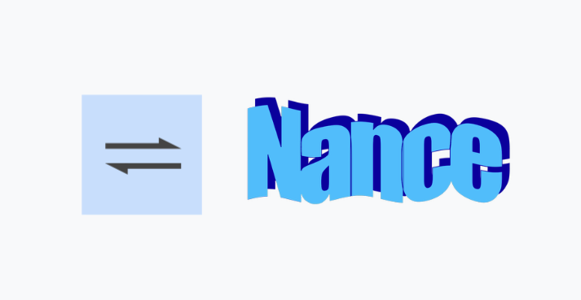
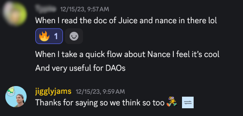
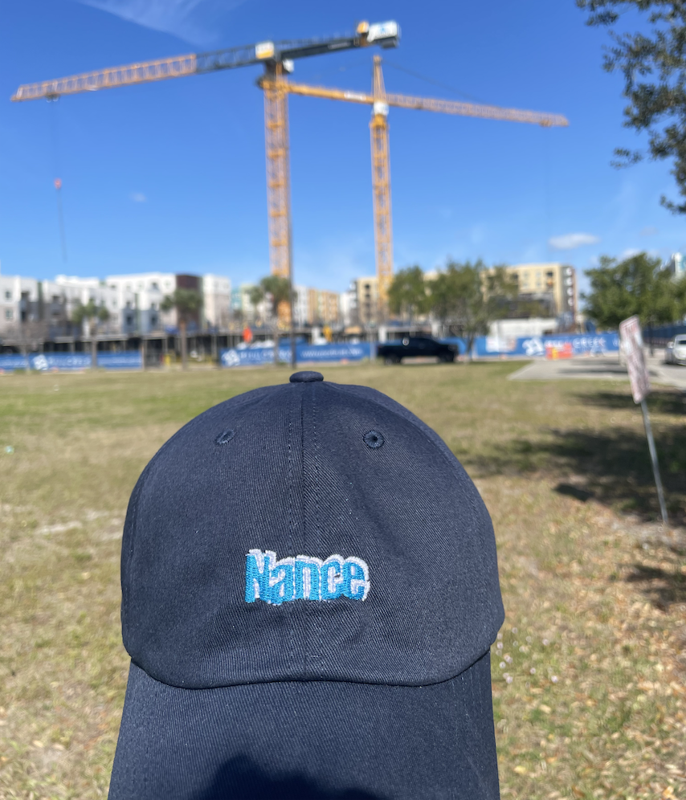
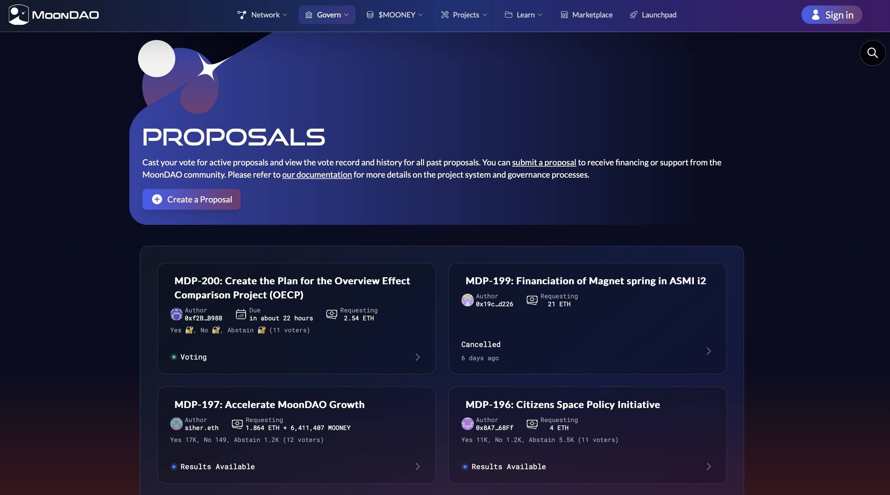

The Nance Story
Backstory
In 2021 my sister and brother-in-law launched an NFT project called Fly Frogs1. He did the art, she wrote the code. I was working at an engineering consultancy called Very at the time doing electrical engineering and product development for clients that either had an idea they wanted to turn into a product OR to rescue them from their previous consultancy that promised they could do the same. It was a good place to work but consultancies are a tough business, maintaining a satisfied engineering work force is difficult especially with the constant reminder of what the company is charging clients vs. what they are passing on to the employees!
I had minimal software skills, I would write Python scripts to manage hardware development stuff or flash firmware on devices but was always told I just didn’t have the chops to be a real software developer. As the Fly Frog community Discord chat continued to grow I dove into learning Javascript through the Discord bots API.
Late summer 2021 there was a @nnnnicholas tweet asking for someone to build a bot that counts the number of times a user in a Discord server says gm. From there I got in touch with Zeugh, the head of a group called CanuDAO that was managing the community for another DAO called Juicebox (more on them in a bit). The gm bot was my first software with real users. It didn’t do a whole lot (responds with an emoji for the number of gm’s a user has said in a row 🤷♂️) but it was being used! It’s still used today and there is even a dashboard with stats here. Writing bots felt powerful, working with strangers from around the world was fun, and I finally was getting paid to write software.
A Spark
In November 2021 a rag tag group of 30 formed ConstitutionDAO with one goal: buy one of the thirteen remaining copies of the Constitution of the United States of America. The main contributor to the Juicebox protocol (and all around great dude) jango hopped into their Discord and told them how the collection of smart contracts and web app called Juicebox works. They raised 11.6k ETH through the platform. That was not enough to beat Ken Griffith2 and his $43.2M bid at the Sotheby’s auction, but people saw the power of crypto3. Juicebox gained some traction and now had more funds to continue development. With more funds in a DAO comes more governance, the process by which members and outsiders propose what they want to do and how much they want to get paid.
At the time Juicebox was using Notion to store proposals, Discord to discuss and do an initial poll, Snapshot to do a formal token weighted vote, and Safe multisig to review and execute. This was a very manual process that was run by early Juicebox contributors 0xSTVG and filipv. I saw a path to automation and built the first version of Nance. It was a basic script that connected Notion, to Discord, and Snapshot but it saved core contributors a significant amount of time and Juicebox saw real value in it. The development continued over nights and weekends since I was still working as an electrical engineer at Very.
Remove dependencies
In July 2022 Nance was butting up against some of the limitations of Notion and began to feel the need for our own frontend app. Another young software dev named twodam was building a Juicebox ecosystem project called juicetool. We combined forces and Nance was a real team now, we even had a GitHub organization! Nicholas was our product manager.
Running governance automation for Juicebox was the perfect software development cycle. Every few days there were tasks that the app would have to complete and in between those times we could iterate to make it better. Nance began using dolt (mySQL + git-like version control) and integrated a markdown editor into the interface thus allowing for complete removal of Notion from the governance process. DAO members could now view and create proposals through our app instead of navigating to Notion. This was a big milestone for me! It was clunky at first and I remember losing some data once which felt bad, but as we got our weekly feedback from DAO members we slowly improved.
Development continues
We began to look for other DAOs that might be able to use Nance so that Juicebox wouldn’t be the only entity supporting us. Nicholas left at some point and Zeugh joined as PM and sales. He promoted Nance a lot and even gave some talks at conferences about it but making it work for other organizations was hard. Some of that could have been mitigated with a real test suite which I didn’t begin to write until much later, but in general its hard to be modular!
I also began to sense how a product can drift towards a consultancy. When you’re bootstrapped and customers ask to integrate with their particular set of tools you can quickly fall prey to promises to close the deal, only later to realizing that its going to take you weeks to get it working and the monthly fee you quoted them with just isn’t worth it. This is tough to avoid if you do not draw hard boundaries between product and consultancy. With such a niche product its a delicate balance.
At the end of 2022 I quit my job at Very and became self employed 😎4. There was no real plan for Nance. Just code, vibes, and a lot of people saying wagmi. Juicebox continued supporting our development and we continued to improve the product for them.
Staying afloat
In early 2023, we began to take things more seriously. I got an EIN, we launched our own Discord server, we began conducting our weekly(ish) meeting dubbed Nancehall, we made a GitHub project board. I didn’t know how to hire a designer so I made a stupid simple logo and used wordart.

We chugged along like this for most of the year, continuing to improve the codebase and product but it started to feel like the product was too niche to be a success. Not to mention the big crypto scams, the small crypto scams and everything in between that kept me questioning contributing to this space at all. We carried on anyways, we made documentation.
It wasn’t until the very end of 2023 we got a cold reach out from a group called DAOSquare, a small investment DAO that found us through the Juicebox documentation. This felt like another big milestone. We had merely been staying afloat for most of the year and finally had a potential customer come directly to us! Twodam and I worked to add support for gnosis chain which DAOSquare used and we had another customer5. Receiving user feedback from someone besides Juicebox was crucial to not pigeon hole the product into their process. This gave us real incentives to do so. It was a nice way to end a wild year.

Muddling through
The Nance app began to feel sluggish and people were complaining. Twodam and I were convinced that we had to rewrite the app in a new framework called Remix to make it run as speedy as possible. We thought it’d be simple, but after four months of intense work by twodam it still wasn’t complete. It was definitely prettier, but loading proposals was still slow! What the heck! I tried fetching proposal data from the client side instead of through a Next.js API route (which on Vercel runs as a serverless function). This made it blazingly fast, and in hindsight it makes total sense since using an API route requires Vercel to spin up a serverless function. This was slow and a silly mistake.
A fast app feels good. Especially for your old users who have been using the crappy slow version for so long. We scrapped the rewrite, and I’m not convinced a rewrite is ever worth it. Developers are always itching to start over with the new shiny language or framework but they forget how much time and complexity it took to get here, and that the new shiny thing will be old someday, or worse, stop being supported all together. Stay the course, use things that are Lindy.
Next, I made a hat. Its all about the merch in the end. 
I started looking for new avenues to push Nance. A former colleague and friend of mine was Head of Community at a company called Aleo in New York City. I pitched them on developing a white-label version of Nance that they could host and run themselves. It was a jaunt back into consulting instead of product but it felt necessary to keep the main product going. The deal was good and they accepted. The code is disappointingly not opensource (I need to remember to always push for that early) but the site is still live here. It uses the same markdown editor as Nance, relies on Discord for authentication, Supabase for proposal & vote storage, and Aleo compatible wallets for signing of votes6. Overall, this was a good experience! I got to write the frontend and backend myself and figure out the finer details of building something you can actually walk away from (much easier said than done).
Another client
In mid 2024 we landed a client that was on our radar for a long time, MoonDAO. They launched their own juicebox project in 2022 and raised ~$8M with a mission to help democratize human space travel. They ran a raffle where you could win a flight on a Blue Origin rocket and sent YouTuber Dude Perfect on one as well. Super cool group! Pablo from MoonDAO is (rightfully) adamant about having everything integrated into the MoonDAO homepage so they were not interested in governing through the Nance app. This lead us to pitch them on doing a custom integration into their app. This is a huge benefit of opensource apps, you can poke around a customer’s app to see what you can do before you pitch them. They also use Next.js so this wasn’t that crazy of a lift. Twodam was able to copy-paste a lot of our app into theirs, so it worked out pretty well (minus when we founds bugs in our app we would have to trickle down to theirs…). It was only a one time payout but overall a good experience. They took over maintenance of the integration and still use it today!

The search for more customers lead me pitch Shutter, a group that develops methods of encrypted voting and trading onchain. Shutter DAO had a different governance process and used a Discourse forum to discuss proposals instead of Discord. A lot of older and larger DAOs did as well since its a free and opensource platform you can host yourself on a modest server. I had always planned to add support for Discourse to Nance and now seemed like the time if we wanted to stay alive. I made a proposal in their forum and got some initial feedback but then the momentum petered out. They were already using another governance platform called Decent. My proposal got the attention of Decent’s founder and crypto OG Parker McCurley, he wanted to chat. Zeugh, knower of all people, setup the group chat.
Acquisition
This is end of 2024. I filmed a detailed demo and sent Parker a message with all the details about Nance. He said we had a lot of features that Decent needs and the CTO would evaluate our codebase to see if there was a possibility of them acquiring us! He went radio silent for a bit after that and I was convince it wasn’t going to happen. I was also convinced that the governance space is way too niche and was going to keep maintaining Nance as an opensource app but was no longer going spend time pitching new customers or features. It sort of felt like giving up, but seemed like the right thing to do.
The New Year rolls around and the conversation with Decent picks back up. After some back and forth, we agree to a deal and I fly out to meet the team at ETH Denver! This is a wild experience: I meet the whole team, I’m working their conference booth and even getting some connections for new clients. The conference is a huge success for Decent (merch game was on point) and it gave me confidence that the acquisition was going to be a good thing for everyone. I am able to convince twodam of this as well!
I get home and twodam and I get added to Slack. We hit the ground running and get to work.

Integration
The deal was to integrate Nance into Decent over the next six months and then evaluate joining the team long term. The team at Decent was great, I got to work with closely with then CTO John Huang, a long time software developer who really pushed twodam and I to make tightly scoped PRs that are required when working with (slightly) larger teams. We we’re not doing this at all when it was just the two of us! At its core, the Decent app is a series of smart contracts that lets you turn a Safe multisig into a token voting DAO. Impressively they did all of this without ever hosting a backend of their own. This made the app a little sluggish at times and my Nance API work was meant to speed things up and allow for new features like comments and draft proposals. To improve the load times of the app and allow for other features like notifications I chose Ponder, a newer blockchain indexing tool that is currently taking over where the Graph has fail. Its way easier to use, lets you take control of the infrastructure and is natively crosschain. It was great working with Ponder, its a powerful piece of software and their Telegram support channel is very active if you ever hit any snags. Would recommend.
Decent pivoted a few times while I was there and scrapped a lot of the Nance integration once the difficulty of selling governance tooling became more apparent. They are now in the process of retooling as a token launch platform. The API and infrastructure I set up7 was still useful for improving the app user experience and adding token launch platform features such as PDF document generation and know your customer (KYC) checks for investors. I completed my obligation to Decent almost on schedule (needed one extra month) and everyone parted ways on good terms.
What’s Next?
Its been a month since I finished Nance and I wrote this tale in order to reflect on the journey. The payout was certainly not large enough to keep sitting around and reflecting. Nance is an overly optimized tool for a very niche problem and this is a bad business. I wouldn’t choose this type of business again but am excited to take what I learned from it and use it else where.
Thanks to all of those who helped me along the way. I am very grateful that I got to learn how to write software and help out people a little bit along the way. Oh, and get a nice hat out of it too!

-
yes the one famous for his involvement with GameStop in January of 2021, read more here ↩︎
-
read more of the tale from founding member and nice guy Jonah Erlich’s perspective here ↩︎
-
for full disclosure, I took one hardware client with me and continued to do electrical engineering for them, this was crucial in allowing me to continue the development of Nance, I am grateful for this ↩︎
-
technically they didn’t pay us until March 2024 but hey I was learning how to sell ↩︎
-
integrating the Aleo SDK to confirm signatures was a huge pain in the ass and I think my app I made is the only one to do so offchain ↩︎
-
the code WAS opensource but recently went closed so I guess pushing for that doesn’t matter either if there a way to switch back 🙃 ↩︎